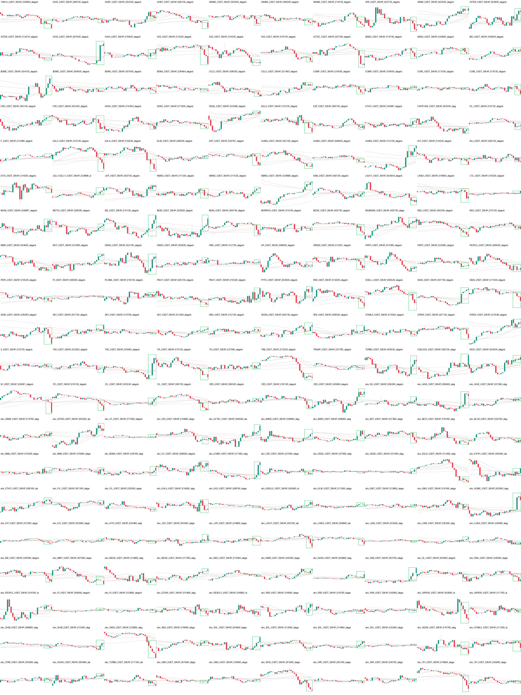
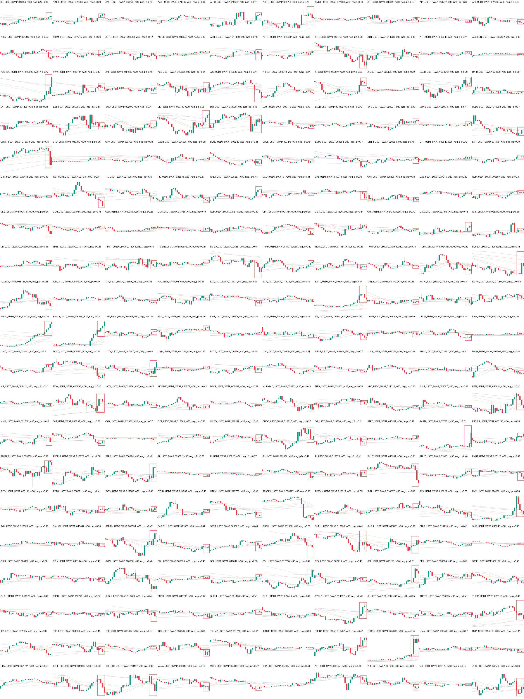
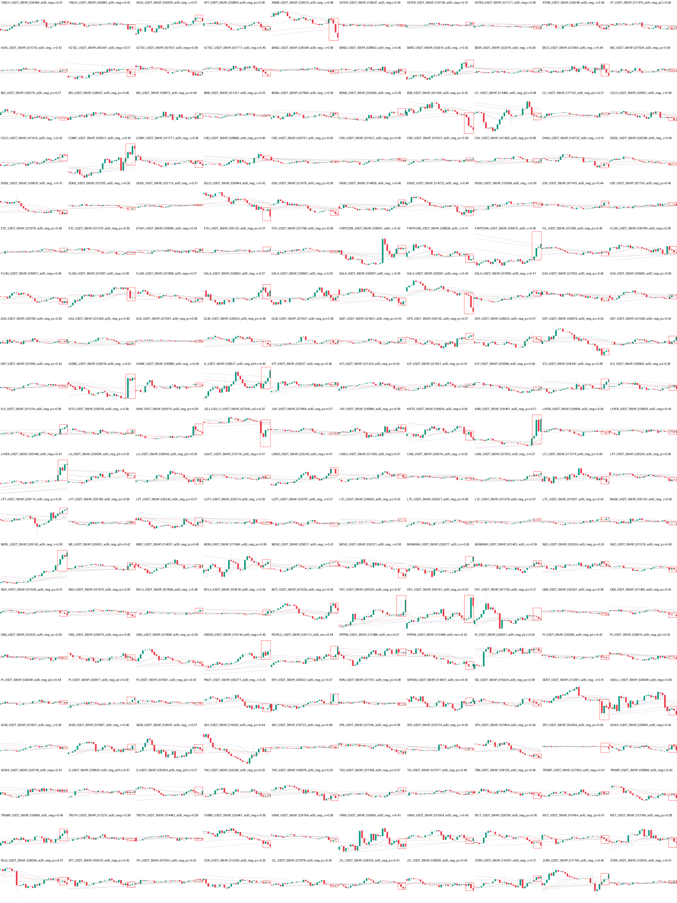
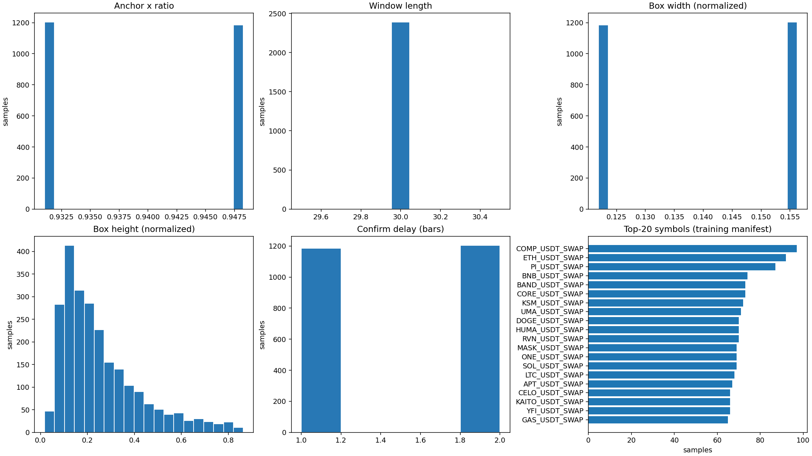

正例 montage · 200 个样本
每个小格是一张独立 30-bar 图；绿框是训练标签。

训练 Hard Negative montage · 200 个样本
每个小格是一张独立负样本；红框是旧 B2 模型在 conf=0.35 时的误报位置。

独立 Hard Negative montage · 200 个样本
来自后续 val 时间块，不进入训练、early stopping 或 best checkpoint 选择。

几何与样本分布
